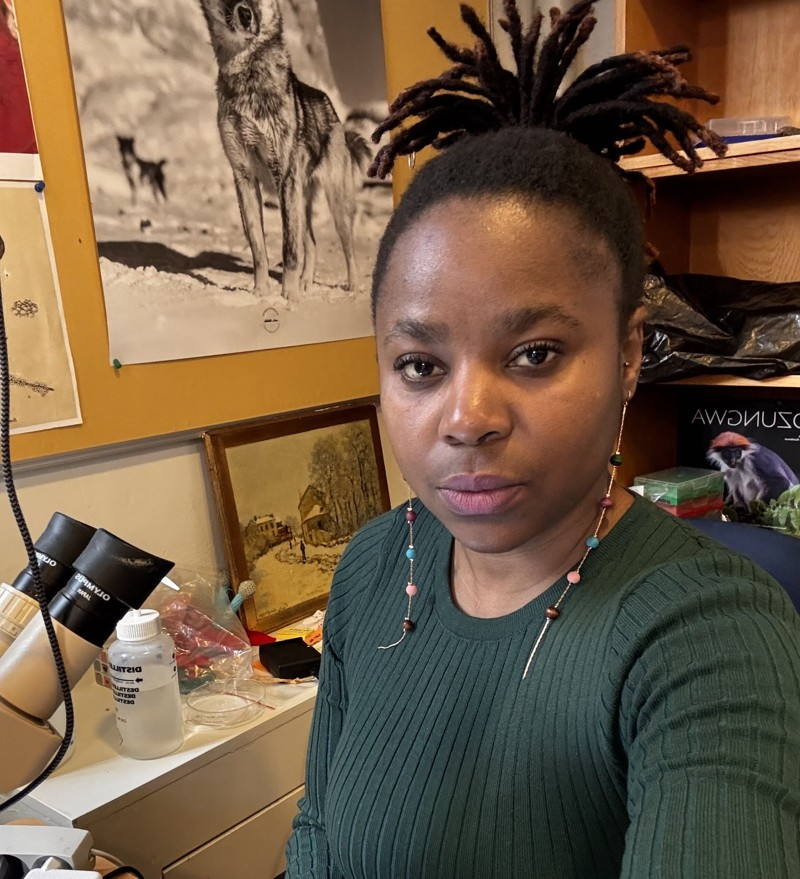
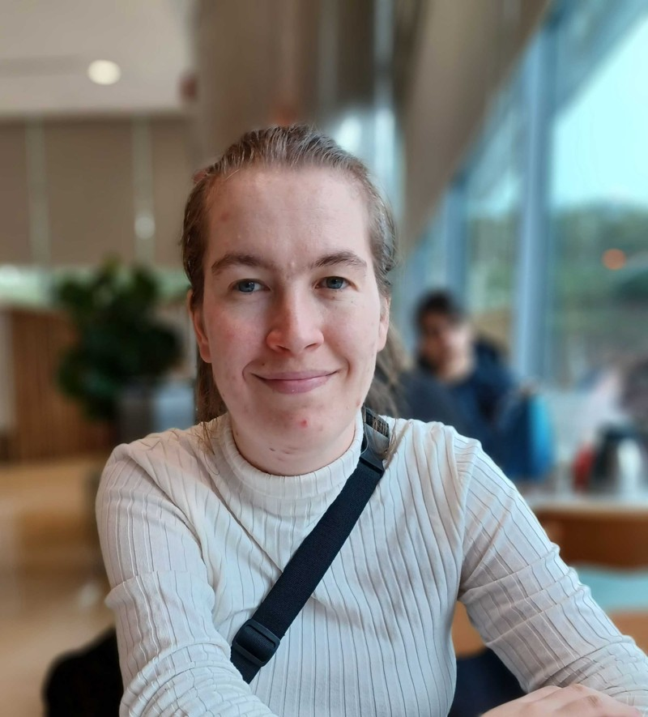

Shyamsundar Ravishankar
Postdoctoral researcher
Shyamsundar holds a PhD from the University of Adelaide and specialises in ancient DNA and population genetics.
LinkedInPeople & collaboration
We investigate past ecosystems through ancient environmental DNA, bringing together expertise in field research, laboratory analysis and computational biology.
Led by Mikkel Winther Pedersen at the Globe Institute, University of Copenhagen.
Postdoctoral researcher
Shyamsundar holds a PhD from the University of Adelaide and specialises in ancient DNA and population genetics.
LinkedIn
Postdoctoral researcher
Nicola develops methods for analysing ancient environmental DNA and is an expert in this field.
LinkedIn
Postdoctoral researcher
Michelle is a geographer with a PhD from McGill University and expertise in analysing environmental DNA from lake sediments.
LinkedIn
Postdoctoral researcher
Nare studies past aquatic ecosystems and biodiversity using fish fossils and ancient DNA recovered from lake sediments.
UCPH profile
Postdoctoral researcher
Hannah holds a PhD from the Technical University of Denmark (DTU) and specialises in bacteria and ancient environmental DNA.
LinkedInGet in touch about collaborations, student projects and research questions.